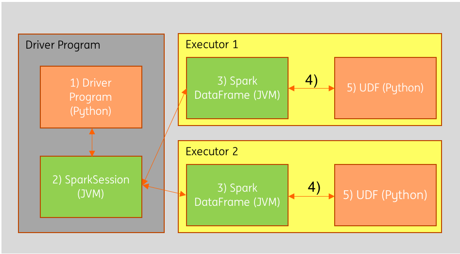

虽然在Pyspark中，驱动程序是一个python进程，但是它创建的SparkSession对象以及其他DataFrames或者RDDs等都是利用Python封装过的 ==JVM对象== 。简单地说，虽然控制程序是Python，但它实际上是python代码告诉集群上的分布式Scala程序该做什么。 数据存储在JVM的内存中，并由Scala代码进行转换。
将这些对象从JVM内存中取出并将它们转换为Python可以读取的形式（称为序列化和反序列化）的过程开销是很大的。 一般情况下，将计算结果收集回Python驱动程序通常针对低容量样本，并且不经常进行，因此这种开销相对不被注意。 但是，如果程序在集群中的对整个数据集的Python和JVM对象之间来回转换时，性能将会受到显著影响。

在上图中，Python程序的指令（1）被转换为Spark执行计划，并通过SparkSession JVM对象（2）传递给集群中不同机器上的两个执行程序（3）。 执行程序通常会从外部源（如HDFS）加载数据，在内存中执行某些转换，然后将数据写回外部存储。 数据将在程序的生命周期内保留在JVM（3）中。
而使用Python UDF时，数据必须经过几个额外的步骤。 首先，数据必须从Java（4）序列化，这样运行UDF所在的Python进程才可以将其读入（5）。 然后，Python运算完的结果经过一些列序列化和反序列化然后返回到JVM。
那么我们该如何优化呢？ 我们可以直接使用Scala来编写Spark UDF。 Scala UDF可以直接在执行程序的JVM中运行，因此数据将跳过两轮序列化和反序列化，处理的效率将会比使用Python UDF高的多。
总结
启动Python进程的开销不小，但是真正的开销在于将数据序列化到Python中。推荐在Spark中定义UDF时首选Scala或Java，即使UDFs是用Scala/Java编写的，不用担心，我们依然可以在python(pyspark)中使用它们，简单实例如下：
1
2
3
4
5
6
7
8
9
10
11
12
13
14
15### pyspark --jars [path/to/jar/x.jar]
# Pre Spark 2.1,
spark._jvm.com.test.spark.udf.MyUpper.registerUDF(spark._jsparkSession)
# Spark 2.1+
from pyspark.sql.types import StringType
sqlContext.registerJavaFunction("my_upper", "com.test.spark.udf.MyUpper", StringType())
# Spark 2.3+
from pyspark.sql.types import StringType
spark.udf.registerJavaFunction("my_upper", "com.test.spark.udf.MyUpper", StringType())
# Use your UDF
spark.sql("""SELECT my_upper('abeD123okoj')""").show()